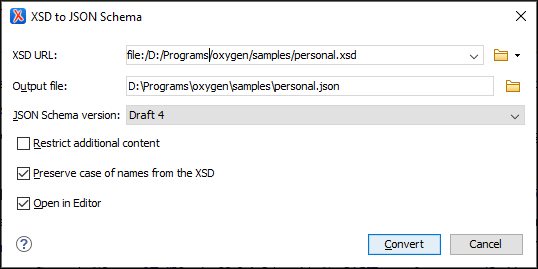

XSD to JSON Schema Converter
Oxygen XML Editor includes a tool for converting an XML Schema file (XSD) to a JSON Schema file. The XSD to JSON Schema action for invoking the tool can be found in the menu. It requires an additional add-on to be installed, so the first time you invoke the action, Oxygen XML Editor will present a dialog box asking if you want to install it. Once installed, you need to restart Oxygen XML Editor and the XSD to JSON Schema action will invoke the tool.
To convert an XML Schema (XSD) to a JSON Schema, follow these steps:
-
Select the XSD to JSON Schema action from the menu.
Step Result: The XSD to JSON Schema dialog box is displayed:
Figure 1. XSD to JSON Schema Dialog Box  - In the XSD URL field, choose or enter the URL of the XML Schema document. The conversion supports XSD versions 1.0 and 1.1.
- In the Output file field, choose the path for the resulting output file.
- For the JSON Schema version option, choose the version of the resulting JSON schema. The possible choices are: Draft 4, Draft 6, Draft 7, and Draft 2019-09.
- [Optional] If you select the Restrict additional content option, then additionalProperties (for objects) and additionalItems (for arrays) will be set to false in the resulting schema. By default, these keys are not in the schema, meaning that providing additional content (according to the schema) is allowed.
- [Optional] You can select the Preserve case of names from the XSD option if you want the names from the XSD to remain unchanged in the resulting JSON Schema. Otherwise, the default JAXB naming algorithm will be applied (for example, "some.nAMe" is changed to "SomeNAMe", or "Some_oth3r_name" is changed to "SomeOth3RName").
- [Optional] You can select the Open in Editor option to open the resulting JSON Schema document in the main editing pane.
- Click the Convert button.
Result: The original XSD document is now converted to a JSON Schema document. The
resulting JSON Schema will be the specified draft and will contain:
- The
$idof the schema, generated from XSDtargetNamespace. - The
$definitionssection, which declares complex and enum types. - The
anyOfsection, which lists possible top-level elements as an array of objects.
Other Possible Results:
- If an XSD type extends another type, then its schema is combined with the schema of the
base type using the
allOfkeyword. - If an extension in XSD defines an element with the same name as an attribute in the
base, a property named
restis generated to avoid name conflicts in JSON. - If a property of a complex type is a collection property, the schema of the collection items will be wrapped in the JSON array schema.
Conversion Mappings
The following table lists the specific conversion mapping details.
| XML Schema Type | JSON Schema Representation |
|---|---|
| anySimpleType | string, number, integer, boolean, null |
| anyType | string, number, integer, boolean, null, object, array |
| string | string |
| normalizedString | string |
| token | string |
| language | string |
| Name | string |
| NCName | string |
| ID | string |
| IDREF | string |
| IDREFS | array of strings |
| ENTITY | string |
| ENTITIES | array of strings |
| NMTOKEN | string |
| NMTOKENS | array of strings |
| boolean | boolean |
| base64Binary | array of integers |
| hexBinary | array of integers |
| float | number |
| decimal | number |
| integer | integer |
| nonPositiveInteger | integer |
| negativeInteger | integer |
| long | integer |
| int | integer |
| short | integer |
| byte | integer |
| nonNegativeInteger | integer |
| unsignedLong | integer |
| unsignedInt | integer |
| unsignedShort | integer |
| unsignedByte | integer |
| positiveInteger | integer |
| double | number |
| anyURI | string with "format":"uri" |
| QName | object with "namespaceURI", "localPart", "prefix" |
| duration | string |
| dateTime | string with "format":"date-time" |
| date | string with "format":"date" |
| time | string with "format":"time" |
Conversion Limitations
In most cases, the conversion creates an equivalent schema, but there are some
limitations:
- Restrictions/facets are not taken into consideration when converting (fractionDigits, pattern, totalDigits, whiteSpace, minInclusive, maxInclusive, and the restrictions for length, except enumeration). However, extensions and indicators are properly converted (minOccurs, maxOccurs, group, sequence, choice).
- The
<documentation>element is not converted into<description>. - The
@substitutionGroupattribute for an element that has no declared type becomes a reference to the element that can substitute it. - The
@blockattribute is not taken into consideration during the conversion.